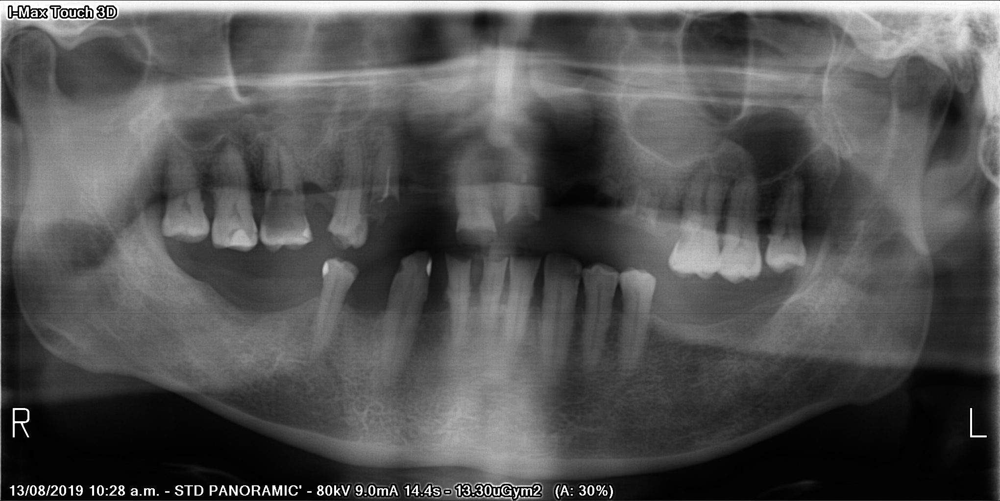

The measurement lab.
Browser adaptation of my local signed-axis calculation tool. Select a landmark, then click the X-ray to place it. Zoom in for precision. This demonstrates a research workflow, not a clinical diagnosis.
1. Load the example → 2. Select Root apex → 3. Move the point and watch the reading change. The example points explain the interaction; they are not clinical annotations.
Select mesial CEJ, then click a tooth. Place all five landmarks on the same tooth.

SIGNED LONG-AXIS PROJECTION
Measurements are calculated locally in this browser.
Invalid landmark geometry produces an error rather than a misleading zero.
Image source: Humans in the Loop — Teeth Segmentation on dental X-ray images. CC0 dataset, as documented in the local sample README. Panoramic distortion and overlap limit point-placement precision. Study results come from one reader and one X-ray; this tool is not clinically validated.